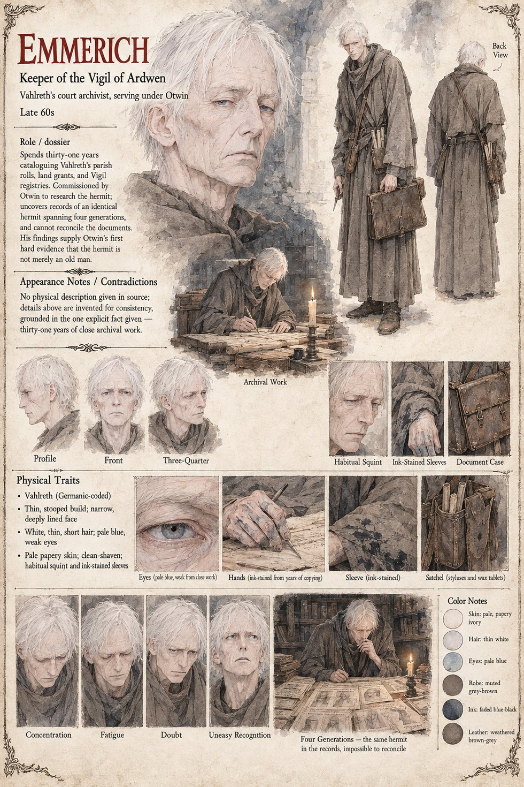

Emmerich
Keeper of the Vigil of Ardwen, archivist to Otwin · thirty-one years cataloguing parish rolls, land grants and registries · late sixties by his sheet
A Keeper of the Vigil of Ardwen who has spent thirty-one years cataloguing Vahlreth's parish rolls, land grants and Vigil registries with a thoroughness his superiors find faintly excessive and his king, once he finally has use for it, finds indispensable. Otwin, who after Frida's report sends for his own most patient archivist, gets his first answer in nine days: a land grant four generations old exempting “the solitary tenant of the northern clearing” from a tithe nobody has ever successfully collected from him.
It takes Emmerich longer, and costs him more private unease, to notice that the description attached to that tenant, pale, unaging, remarkably young for a man already established as a fixture of the district, matches item for item the one in a Vigil chapter's disciplinary log two generations earlier, concerning a hermit some overzealous young Keeper once attempted, and failed, to compel into formal worship. It matches again, further back still, in a single surviving line of a tax dispute that predates the founding of Otwin's own dukedom, in which a neighbouring lord complains that the clearing's tenant “paid nothing, aged not at all, and could not be made to answer for either”. Emmerich has built a career on the comforting principle that any sufficiently patient man can eventually reconcile any two documents. He presents his findings with the visible discomfort of a scholar who has found two that refuse every attempt, and offers Otwin two readings: an unusually persistent family tradition of hermits adopting an identical appearance and manner across four documented generations, or something he does not, in his own carefully hedged written words, “possess sufficient framework to properly categorize”. Otwin reads the report a third time at his own desk, by a candle he does not trouble to replace, and keeps it.
Together with Rosalind's forty-one days and the physician's account it is what Otwin builds a clean, seductive theory on, and the manuscript says the theory was entirely wrong. The manuscript gives Emmerich his title, his thirty-one years and his documents, and no appearance. The sheet's late sixties, thin white hair, weak pale-blue eyes, thin stooped build, grey-brown Keeper's robe, ink-stained sleeves and satchel of styluses and wax tablets are its own, as is its line that he serves as Vahlreth's court archivist under Otwin.